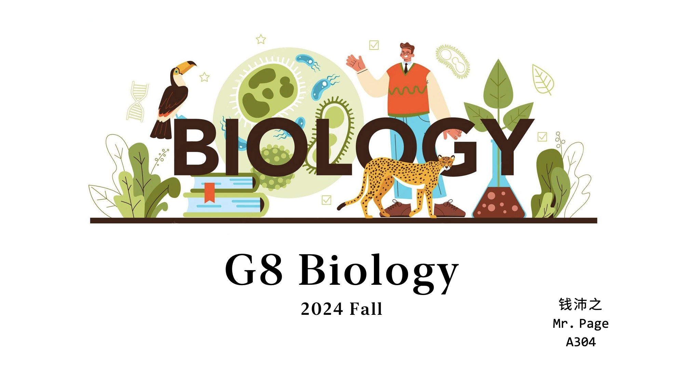

A GitBook for Teaching
1
Overview
2
Chapter I: From A Cell To An Organism
2.1
Lecture 1: Cell Cycle
2.2
Lecture 2: Cell Division
2.3
Lecture 3: Levels of Organization
2.4
Experiment 1: Observing Mitosis In Plant Cells
2.5
Experiment 2: Cell Differentiation
2.6
Project 1: Mitosis & The Cell Cycle
2.7
Project 2: Biological Organization
3
Chapter II: Reproduction Of Organisms
3.1
Lecture 4: Sexual Reproduction
3.1.1
Keywords
3.1.2
Lesson outline
3.1.3
Homework
3.1.4
Extension
3.2
Lecture 5: Meiosis-1
3.2.1
Lesson outline
3.2.2
Homework
3.3
Lecture 6: Meiosis-2
3.3.1
Lesson outline
3.3.2
Homework
3.4
Lecture 7: Meiosis-3
3.4.1
Lesson outline
3.4.2
Homework
3.5
Lecture 8: Asexual Reproduction
3.5.1
Keywords
3.5.2
Lesson outline
3.5.3
Homework
4
Midterm Review
4.1
Midterm Review Scope
4.2
Midterm Review Practice 1
4.3
Midterm Review Practice 2
5
Chapter III: Genetics
5.1
Lecture 9: Mendel and his Peas - 1
5.1.1
Keywords
5.1.2
Lesson outline
Published with bookdown
G8 Biology Guidebook
G8 Biology Guidebook
Page Tsien
2024-11-20
1
Overview
